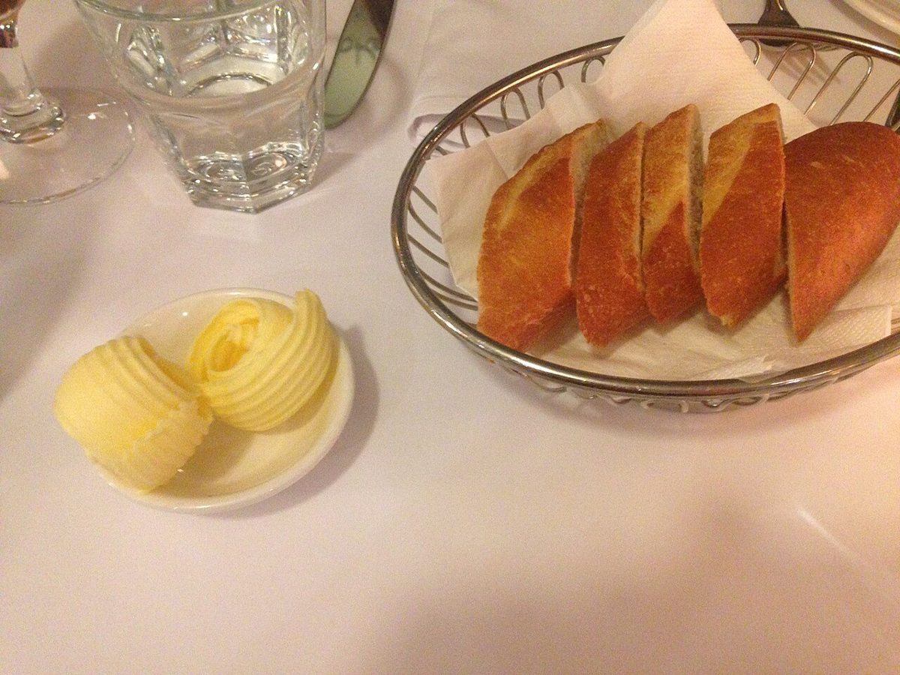
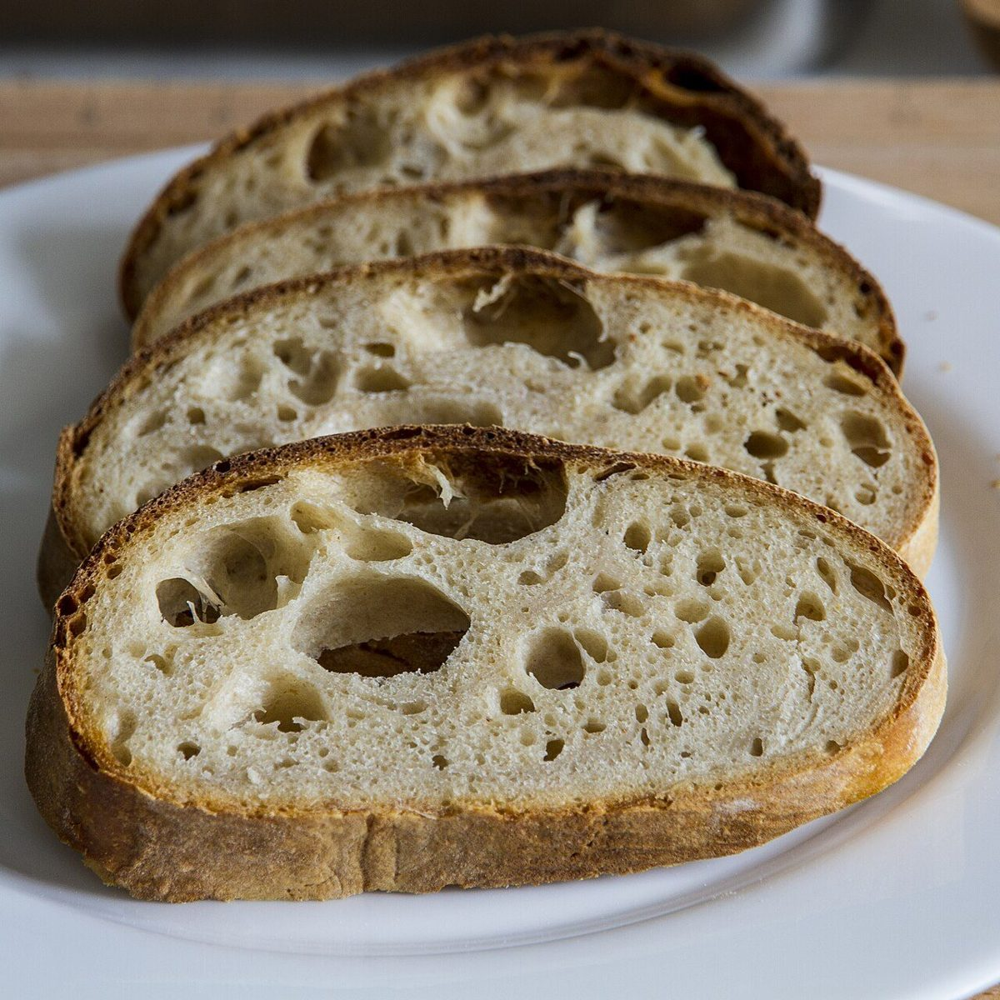

パン食堂
まほろば

制作側の連想
「左がパン、右が匙」の配膳図
制作側の連想で、お店の理念・由来とは無関係です。屋号の由来は分かりません。「パン食堂」という言葉から食卓を思い浮かべ、洋食の配膳でパン皿は左、スプーンは右に置くという決まりごとを、サイトの作りに借りました。各ページは、テーブルの上の位置番号①〜⑤で並んでいます。
テーブルの上(イメージ)
パンのある食卓を、位置番号で。
写真は上田市やお店のものではなく、国外・撮影地不明のフリー素材です。お店で提供しているものを示すものではありません。



ご案内
お店のこと(確認できたものだけ)
| 所在地 | 〒386-0016 長野県上田市国分１７７５ |
|---|---|
| 電話 | 080-2243-6359 |
| 営業時間 | 準備中 |
| 定休日 | 準備中 |
| ご予約 | 準備中 |
| 駐車場 | 準備中 |
| SNS | Instagram @mahoroba24 |